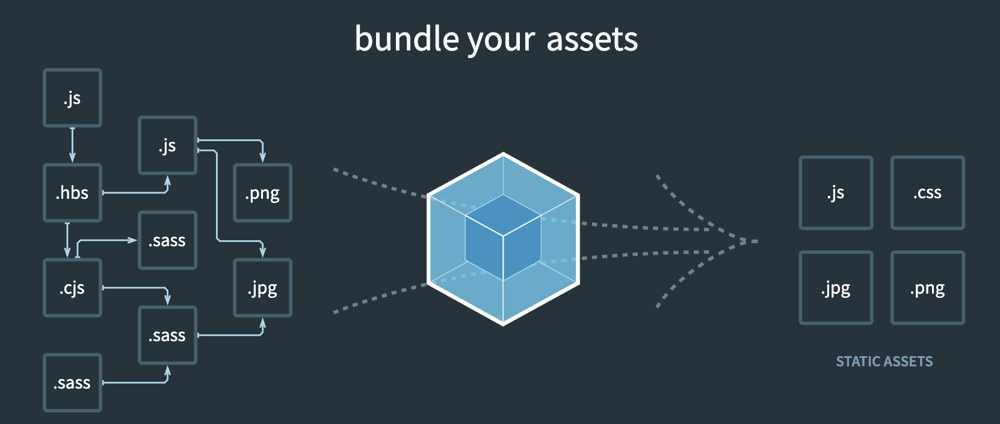

前端问题解惑
前端问题解惑
如今前端发展的太快了，让我们这些只会基础HTML + CSS + JS的人无所适从，大量的组件，大量的工具，让人不知道到底干嘛的，所以这里写下最近的学习所得，强烈推荐资源：theodinproject 和 modern-javascript-explained-for-dinosaurs。
前后端渲染
后端渲染
如果你用过Java编写过Web项目，应该听说过Servlet 和 JSP这玩意儿，Servlet可以处理HTTP请求并生成响应，JSP是简化版的Servlet，用户通过访问Servlet，获取服务端的HTML页面，通过JSP可以在HTML中嵌入Java的代码，比如条件判断，循环，数据访问等等，增强页面展示和动态性。你可能会疑惑，为什么那时候不用Js啊，因为那时候的Js只能做一些简单的动态效果，表单验证之类的功能。
一切看起来不错，但有一些问题存在：
- 占用服务器资源多，所有计算在服务器完成。
- 每请求一次，都要从服务器上获取完整的HTML，比如我就想更新页面上一小部分，却需要下载整个页面（这里就引出了后面的
ajax）。
前端渲染
现在我们很常见的前后端分离，将所有JavaScript,css,HTML等文件打包成一个或多个静态文件，通过Nginx进行访问，这里只有基本的HTML框架，再通过访问服务端接口获取数据，通过Js进行处理渲染。这就很方便的将页面展示与数据处理进行解耦。
优点：
- 减轻了服务端的压力
- 提高了页面的响应速度
- 支持动态内容更新等等
缺点：
- 例如对SEO不够友好，SEO就是搜索引擎爬虫的优化，比如想让百度多一些我的网站链接，服务端渲染每次请求都有实际数据，并且加载快，而前端渲染就会有数据丢失，加载慢的问题。
- 首次访问时需要下载大量静态文件，这里引出后面的
webpack
JavaScript引入
版本一：HTML+JS
刚学习JavaScript时，我们都知道，可以直接在HTML中使用script标签进行使用，不过为了代码复用管理我们通过会写到.js文件中，然后在HTML中进行引用。并且假如有人写好了一个Js库，你可以下载源文件到本地，然后直接进行引用。这很简单直接。但有一些问题需要解决：
- 引入顺序是有要求的，要不然依赖会出现问题
- 当有多个文件引入时，下载时间就会变长
- 如果第三方js文件更新，就需要手动下载最新的文件，进行替换（这里引出
npm）
版本二：使用NPM
npm是JavaScript第三方包管理工具，就比如大家把自己写好的库发布到npm中，当你需要某个库时，你声明你要什么，通过npm进行下载，而不需要手动挨个寻找。下载下来的文件都会放到node_modules目录下，这样你在HTML引用JavaScript文件时，就到node_modules目录下寻找对应的位置。
版本三：使用Webpack
 webpack是一个开源的JavaScript模块打包器，什么意思？上面我们讲的问题，当多个文件引入到HTML时，下载时长增加。文件引入顺序是有要求的，否则依赖错误，通过webpack就能解决这一问题。
Webpack可以根据模块的依赖关系自动创建模块之间的引用关系，通过打包将多个模块合并为一个或多个文件，同时通过分析依赖关系，将不用的代码剔除，尽量精简文件，以减少网络请求的数量和大小，这时候也就解决了依赖顺序，多文件下载的问题。
另外我们会发现一个奇怪的问题，我们经常见到一种语法：import # from '#' ，但是当你自己尝试写到Js文件时，直接插到HTML中，你会看到浏览器控制条输出：Cannot use import statement outside a module,这是因为浏览器不支持ES6的语法，但是为啥Webpack转完能用了，就引出了Babel
版本四：使用Bable
引申上面的问题，这里就不得不提到：ES6, 简单地说，ES6是JavaScript的一个版本，它包含了许多新特性，使编写JavaScript更容易和更干净。但是浏览器并不一定支持这些新特性，所以我们经常听到浏览器兼容问题，就是因为一些浏览器并不支持该特性，导致代码执行错误，而一些浏览器支持，则能正常显示。你无法确定用户是从哪里进行访问的。而这个问题的一个解决方案就是Babel，它可以将现代JavaScript代码转换为旧浏览器可以理解的代码。
我们都知道，不管你是用Vue，React，TypeScript最终浏览器能识别的就仅仅只有HTML,CSS,JavaScript，所以势必是有个玩意儿将这些框架语法进行转化了。这就很像我们常讲的编译二进制文件，因为电脑只能识别二进制，所以不管是C，Rust这些高级语言，最终都会被编译为二进制文件进行执行。这里也是同理的。
辅助工具
linting
Linting是一种静态代码分析工具，主要用于检查代码的语法和规范是否符合某种编程语言的标准。它可以检测出代码中的潜在问题，如语法错误、未定义的变量等。常用的Linting工具有JSLint、ESLint等。
Prettier
Prettier则是一款代码美化工具，它可以将代码按照统一的编码规范进行格式化。它并没有强制性的检查功能，而是将代码格式调整为符合特定编码规范，如空格数量、缩进方式等。Prettier可以帮助保持代码的一致性和可读性。